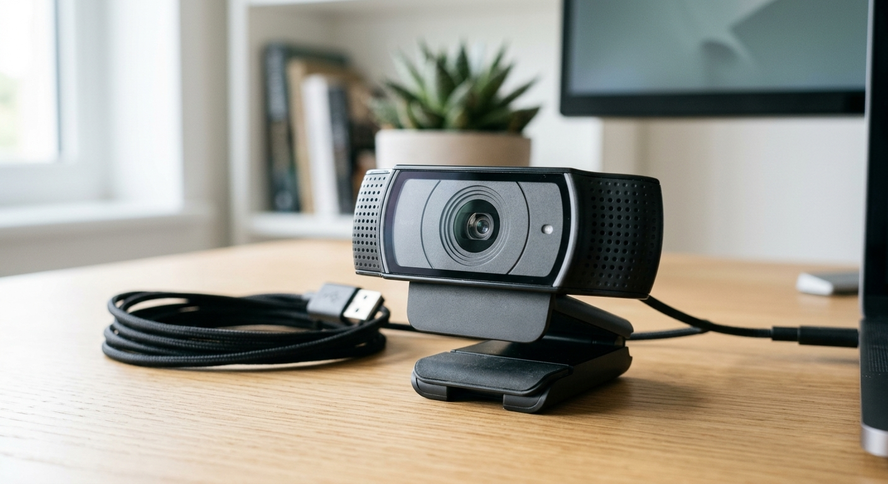

Productos disponibles

Webcam Full HD USB con Micrófono
Precio: S/ 89.90
Stock: 15 unidades
Gama: Media
Garantía: 12 meses
Ficha Técnica:
Resolución: Full HD 1080p
Micrófono: Micrófono integrado con reducción de ruido
Compatibilidad: Windows, macOS y Linux
Diseño / Montaje: Cuerpo compacto con clip ajustable para monitor o laptop
Enfoque: Automático